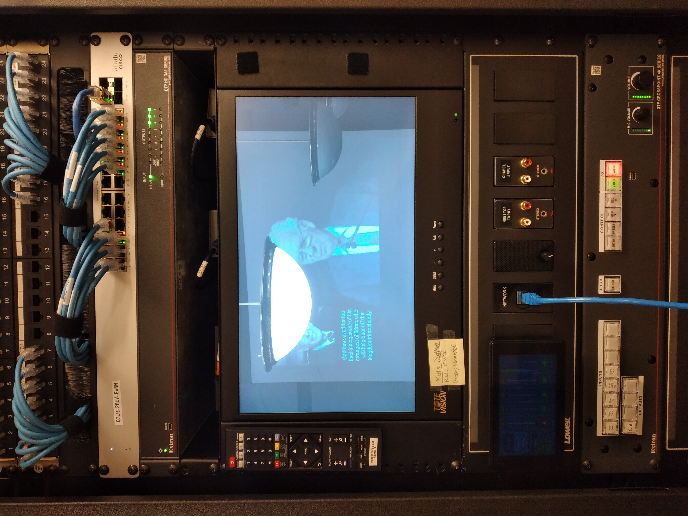
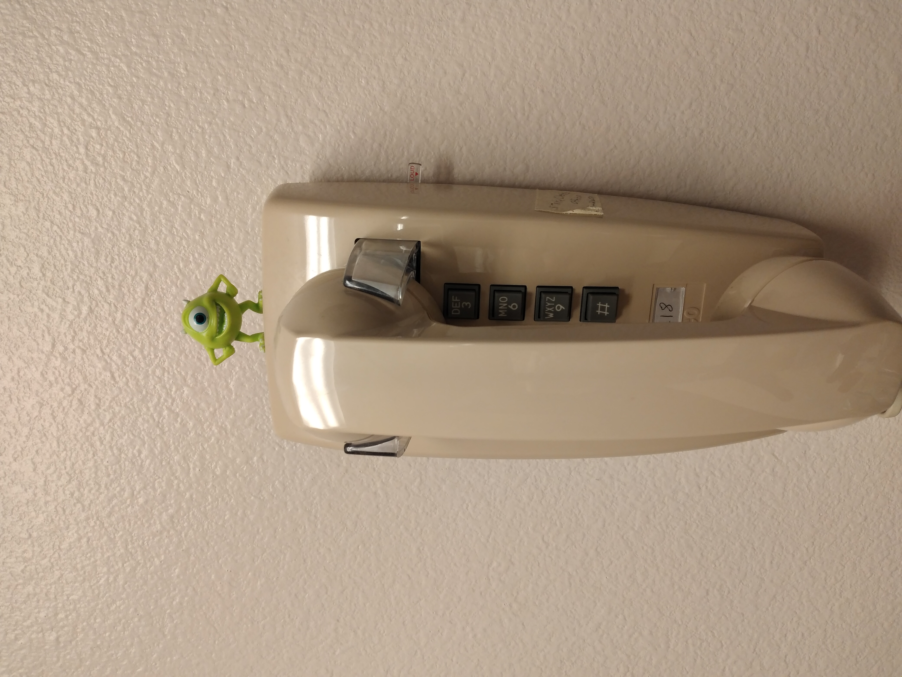

I'm not a photographer. I'm not sure what motivated me to take these photos. Am I capturing a unique vibe? Am I making fun of real photographers? I'm not sure yet. All I know is that these sights captured my attention and made me feel a particular way.

